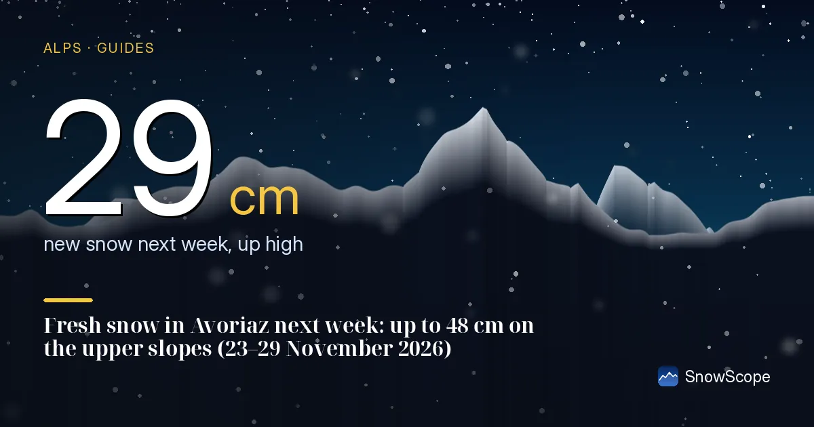
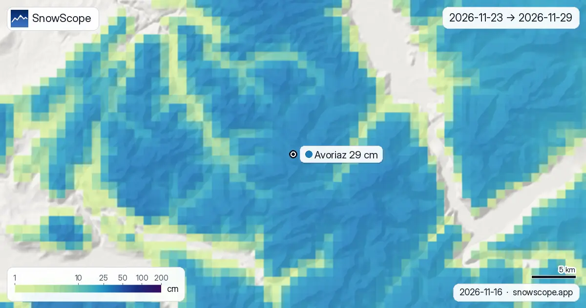
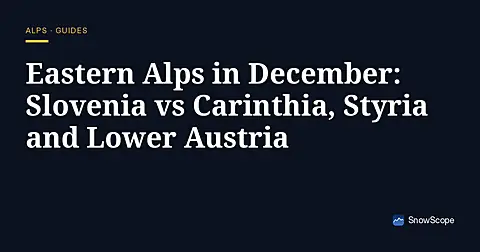

Fresh snow in Avoriaz next week: up to 48 cm on the upper slopes (23–29 November 2026)
Next week brings sustained snow to Avoriaz across all heights, with the upper mountain catching the most. The range is wide—as little as 9 cm or as much as 48 cm at the top—but the forecast trend is firm: four good snow days between Tuesday and Sunday.
See the live snow forecast for Avoriaz in the SnowScope appSnow depth, powder alerts and the 3D map, free.

How much snow, and where
The week of 23–29 November adds up to 29 cm at the top (around 2200 m), 27 cm at mid-mountain (around 1700 m), and 17 cm near the base (around 1200 m). Those are the middle estimates; the range spans 9–48 cm at the top, 8–47 cm mid-mountain, and 4–29 cm at the base.
Height decides the depth. Snow will be plentiful on the Hauts Forts and Chavanette but thinner lower down. The base figure of 17 cm is real snow, but mild air between storms will soften it into heavy slush on the valley runs.
Which days matter most
Four days carry the bulk of the week's snow. Tuesday 24 November brings 5 cm (up to 11 cm) to the top; Wednesday 25 November adds 8 cm (up to 12 cm); Thursday 26 November adds another 5 cm (up to 9 cm); and Sunday 29 November closes with 5 cm (up to 8 cm). The other days are quiet.
If you can ski just one day, pick Thursday 27 November, the day after the main event on Wednesday. Fresh corduroy and soft snow will come together on the upper slopes.
What lies beneath the new snow
The week does not start on bare ground. The earlier period from Tuesday 17 to Friday 20 November is the heavier round: 56 cm at the top (range 42–70 cm) and 2 cm at the base. By the time next week's storms arrive, the upper mountain will already hold a solid base.
This layering matters. The new snow will sit on established cover, so early-season crust and thin patches are less of a worry on the upper runs.
Terrain choice: high and north
Avoriaz is the snow-sure heart of the Portes du Soleil because of its height and north-facing slopes. Next week, ski the Hauts Forts and Chavanette, where the Swiss Wall and the black runs down towards Les Prodains will carry the deepest snow.
Morzine and Les Prodains, in the valley, will see less accumulation and faster warming. If you plan to link the valleys, stay high: the mid-mountain lift systems are your insurance against thin snow lower down.
How Avoriaz compares nearby
Flaine (22 km away) is forecast to pick up 27 cm at the top; Chamonix (28 km away) also 27 cm; Verbier (37 km away) 24 cm. Avoriaz leads at 29 cm, but only by a small margin. This storm system is wide and even across the region.
Neighbouring resorts will be equally good. The choice between them hinges on lift status, piste maintenance, and which terrain suits you, not on the snowfall total.
Uncertainty and timing
A forecast eight to ten days out carries a wide range. The low case of 9 cm at the top and the high case of 48 cm span the full spread of outcomes. Timing—which day the snow falls—is more reliable than the exact total.
Plan your trip around 29 cm and treat anything above that as a bonus. Watch the forecast as the week approaches; the numbers will tighten.
Tips for skiers
- Before any off-piste skiing, check the latest French avalanche bulletin (BERA) for the Mont Blanc massif. Fresh snow on a thin early-season pack can present hazards.
- Confirm Avoriaz's lift opening date and status before you travel. Snow on the mountain does not guarantee that the cable cars and chairlifts are running.
- Dress for mixed conditions: the base may be slushy while the top stays cold. Bring base layers for altitude and something waterproof for the lower slopes.
- Target the upper slopes and north-facing terrain if you want the best snow quality. The south side and village runs will feel heavier.
- Plan around Wednesday 25 November as the peak day, then use Thursday and Friday to ski the softened snow before Sunday's last flush.
About these numbers
Resort snow depths are the deepest snow on the resort's upper slopes on the date shown; they are estimates for an area, not a measurement at one point. Forecasts can change. Always read the official avalanche bulletin before going off-piste.
Cite this report
For research, teaching or the press: the numbers and charts are free to reuse under CC BY 4.0 with this citation.
SnowScope (2026), Fresh snow in Avoriaz next week: up to 48 cm on the upper slopes (23–29 November 2026), https://snowscope.app/blog/en/2026/11/avoriaz-powder-forecast-next-week-23-29-november-2026.html, accessed 2026-11-16
SnowScope (Atlas Labs). (2026, November 16). Fresh snow in Avoriaz next week: up to 48 cm on the upper slopes (23–29 November 2026). SnowScope snow reports. https://snowscope.app/blog/en/2026/11/avoriaz-powder-forecast-next-week-23-29-november-2026.html
BibTeX
@misc{snowscope2026avoriazpowderforecastnex,
author = {{SnowScope (Atlas Labs)}},
title = {Fresh snow in Avoriaz next week: up to 48 cm on the upper slopes (23–29 November 2026)},
year = {2026},
month = nov,
howpublished = {\url{https://snowscope.app/blog/en/2026/11/avoriaz-powder-forecast-next-week-23-29-november-2026.html}},
note = {Published 2026-11-16 11:27 UTC; accessed 2026-11-16}
}· CC BY 4.0 · Methods, data and tools →
Avoriaz: snow and temperature by height, this winter vs last (tools) →
Follow Avoriaz
Free: a message when fresh snow is coming, and the forecast every morning.
More snow reports

Galtür's mid-mountain holds 55 cm on a typical 15 December. Low-season passes cost EUR 55.50 until 18 December. Data from 46 winters, 1980-81 to 2025-26.

Slovenia's ski passes are the cheapest (Krvavec EUR 205 for 6 days), but natural December snow there is rare; Lachtal, the Hochkar and the Mölltal glacier do better.

Austria before Christmas: Galtür EUR 258 and Kühtai EUR 269 for 6 days with 30 cm in over 90 % of winters; glaciers cost more, small hills are a gamble.